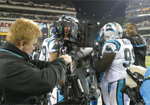

Manhattan Place Entertainment is privileged to be working with FOX Sports and Pace Films in an effort to further develop and implement Pace Films’ 3D “Reality - Cam” system for the purpose of broadcasting live sporting events in 3D.
Pace films which is co owned by Oscar winning director James Cameron and technical “guru” Vince Pace developed the 3D “Reality - Cam” system. This camera system was the one used to shoot the 3D IMAX feature film entitled “Ghost of the Abyss”, which coincidentally, was directed by James Cameron.
The 3D video acquisition system essentially acts as 2 cameras in one. For 3D stereo imaging, it employs 2 Hi-Definition Lenses, 2 Hi-Definition Processors, and 2 Hi-Definition Record Decks that can be utilized in a portable configuration for handheld shooting.
Steve Cohen (Manhattan Place Entertainment’s President) was brought in to join this groundbreaking effort by Gary Lang, Vice President of Special Projects for FOX Sports.
Lang wanted to utilize Cohen’s vast experience in sports television, and specifically wanted Cohen’s unique style of shooting to be at the forefront of this project.
Cohen then brought Chris Bierlein and Jeff Zachary onto the team and the three have acted as special technical consultants, and have also operated the 3D “Reality - Cam” system on a variety of major sporting events including The NFL’s NFC Championship Game, NASCAR’s Las Vegas 400, a Los Angeles Lakers Game, and Professional Boxing.
“Whether viewing the 3D signal live or watching a playback, the footage never ceases to amaze”. “It’s as if you are at the actual event sitting and watching from the exact spot where the camera is positioned”. “More importantly, as a result of this new technology, it will soon be possible to actually televise live sporting events in 3D!”
- Steve Cohen
- President
- Manhattan Place Entertainment
Upon screening the footage in 3D for the first time, David Hill, President of FOX Sports proclaimed, “This is just awesome!” “Boys and girls, this is the future of television!”
Manhattan Place Entertainment is privileged to be an integral part of FOX Sports and Pace Films continuing efforts to further develop and eventually launch this new and exciting technology into mainstream broadcasting.
Return to the Recent Work Blog »